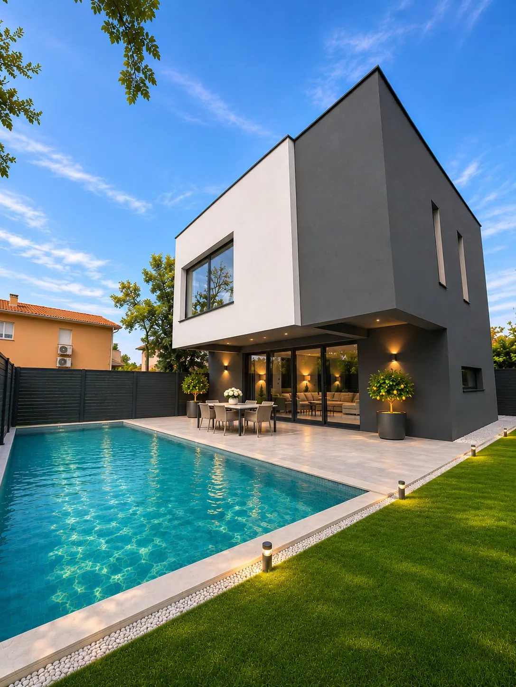
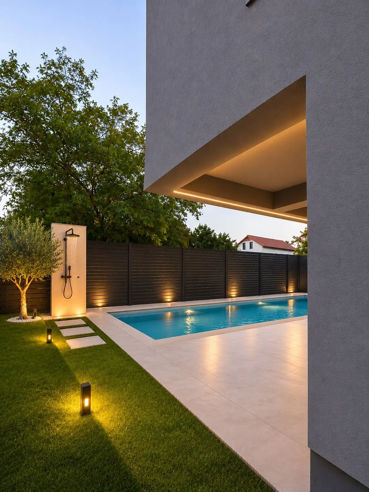

Park prirode Vransko jezero
Najveće prirodno jezero u Hrvatskoj, ornitološki rezervat sa stazama za bicikl i šetnju uz obalu.
Donje Raštane · Dalmacija


Grijani bazen, sunčalište i 70 m² terase samo za vas.
Vanjski tuš, masline i topla rasvjeta vrta.
Moderna vila s tri spavaće sobe i privatnim bazenom, na mirnoj lokaciji pet minuta od plaže i dvadeset minuta od Zadra.
Dnevni boravak, blagovaonica i kuhinja čine jedan prostran, otvoren prostor. Velika klizna staklena stijena otvara ga prema ogromnoj terasi od 70 m² i bazenu.
Zidani bazen uklopljen u terasu i vrt, sa sunčalištem i zasebnom strojarnicom.
Čak 70 m² popločenja protiv klizanja: natkriveni dio za ručak u hladu i otvoreni dio za sunčanje, izravno uz vodu.
Tuš i WC odmah uz dnevni dio, praktično nakon kupanja.
Minimalistička kuhinja s tamnim frontama i velikim kamenim otokom. Vodoravni prozor iznad radne plohe gleda na zelenilo, a blagovaonica se kroz staklo nastavlja na terasu. Kuhinja je potpuno opremljena, a za večeri vani tu je ljetna kuhinja s roštiljem.
Cijeli kat je mirna, privatna zona. Prostrana glavna spavaća soba ima velike staklene stijene i vlastitu kupaonicu, a dvije udobne sobe dijele veliku kupaonicu.
Prostrana i svijetla, s bračnim krevetom, velikim staklenim stijenama i vlastitom kupaonicom.
Jedna s bračnim krevetom, druga s dva kreveta koja se mogu spojiti. Obje imaju ormar i dijele kupaonicu.
Dvije sobe izlaze na otvorenu terasu, a s hodnika se izlazi na balkon.
Walk-in tuševi s ostakljenjem bez okvira, velike pločice s izgledom mramora, tamni podovi, kameni umivaonici i zlatne armature. Topla LED rasvjeta u nišama i stropu.
Grijan i samo za vas, uz terasu i ležaljke.
Daikin uređaji, svaka prostorija s vlastitom regulacijom temperature.
Pametno upravljanje putem Wi-Fi sustava, ugodno i izvan sezone.
Antracit ograda i povišen teren u odnosu na susjede daju puno privatnosti.
Low-E stakla Saint-Gobain smanjuju pregrijavanje ljeti i čuvaju toplinu zimi.
Troslojni hrastov parket Bjelin u svim sobama, ambijentalna LED rasvjeta u stropovima.
Dnevni život u prizemlju, mir i spavanje na katu.
Odaberite prostoriju da je istaknete na tlocrtu.
Ispred bazena je ogromna terasa od 70 m², dijelom natkrivena za objed u hladu.
Odaberite prostoriju da je istaknete na tlocrtu.
Visoki stropovi na katu daju sobama dodatnu prozračnost.
Donje Raštane je mirno mjesto u zaleđu između Zadra i Biograda na Moru, bez gužve i buke.
Najbliža plaža je u Svetom Petru na Moru, 5 minuta vožnje. U krugu od 20 minuta su brojne uređene plaže i prirodne uvale, a gradske plaže Borik, Kolovare i Puntamika lako su dostupne. Iz obližnjih luka polaze brodski izleti na Kornate.
Vrijeme vožnje automobilom.
Najveće prirodno jezero u Hrvatskoj, ornitološki rezervat sa stazama za bicikl i šetnju uz obalu.
Rimski forum, Morske orgulje i Pozdrav Suncu na rivi, i čuveni zadarski zalasci sunca.
Šetnica uz more, marina i restorani. Odavde polazi i trajekt za otok Pašman.
Gotovo 90 otoka, otočića i hridi. Jednodnevni izleti brodom polaze iz Biograda i Zadra.
Trajektom iz Biograda do Tkona: mirne uvale, maslinici i biciklističke staze.
Kraljičina plaža s pijeskom i ljekovitim blatom, i crkvica sv. Križa, zvana najmanja katedrala na svijetu.
Petnaest godina radim na moru, na brodovima koji plove svijetom. Supruga je dio tog puta prošla sa mnom, i zajedno smo upoznali više od 120 država i plovili svih sedam mora.
Villa 7 Seas nastala je iz tog rada i tih putovanja. Ime nosi u čast svakog mora koje nas je dovelo kući, a sedam valova u našem znaku su upravo tih sedam mora. Sada je red na vas da ovdje odmorite.
Matijavaš domaćin
Za vrijeme boravka vila je stvarno vaša. Slavite, kuhajte, slušajte glazbu i radite što vas veseli. Imamo tek nekoliko jednostavnih pravila, kako bi i sljedeći gosti zatekli vilu jednako lijepu.
U vili može boraviti najviše 8 osoba, uključujući djecu. Prijatelji su dobrodošli u posjet, uz prethodni dogovor s domaćinom.
Pri dolasku trebamo osobne dokumente svih gostiju, jer je prijava gostiju u Hrvatskoj zakonska obveza.
Polog uplaćujete prije dolaska. Vraćamo ga u cijelosti u roku od 7 dana nakon odlaska, nakon kratkog pregleda vile.
Nezgode se događaju i razbijena čaša nije problem, samo nam javite. Za veću štetu, nastalu nepažnjom ili namjerno, odgovara glavni gost, u pravilu iz pologa.
Proslave, glazba i druženje su dobrodošli, i danju i navečer. Uživajte u vili kako vama odgovara, samo imajte obzira prema okolini.
Djeca u bazenu uvijek uz nadzor odraslih. Uz bazen molimo bez staklenih čaša i boca, jer krhotine u vodi znače pražnjenje cijelog bazena.
Pušenje je dopušteno samo vani, a e-cigarete smijete koristiti i u vili. Mali psi su dobrodošli uz prethodni dogovor, ali ne na krevetima i kauču.
Završno čišćenje je uključeno, ne trebate čistiti. Samo ostavite posuđe u perilici i odnesite smeće.
Boravak prekidamo samo u slučaju ozbiljnog kršenja pravila, poput namjernog uništavanja imovine ili više gostiju od dogovorenog, i tada bez povrata uplate.
Tijekom boravka nećemo vas ometati. Naš domaćin u blizini uvijek vam je na raspolaganju, što god vam zatreba.
Rezervacije za sezonu 2027. otvaramo u veljači, a prve goste primamo od kraja svibnja. Upit možete poslati već sada. Upišite termin i broj gostiju i javit ćemo vam se među prvima sa slobodnim datumima i cijenom. Bez posrednika i provizije.
Odaberite slobodan tjedan i datumi se sami upišu u upit. Izvan srpnja i kolovoza dolazak je moguć bilo koji dan, uz najmanje 5 noći, pa datume možete upisati i sami.
Izvan srpnja i kolovoza možete doći bilo koji dan, na najmanje 5 noći.
Molimo prvo potvrdite kućni red.
Odgovara vam osobno domaćin Matija, sa slobodnim terminom i cijenom.